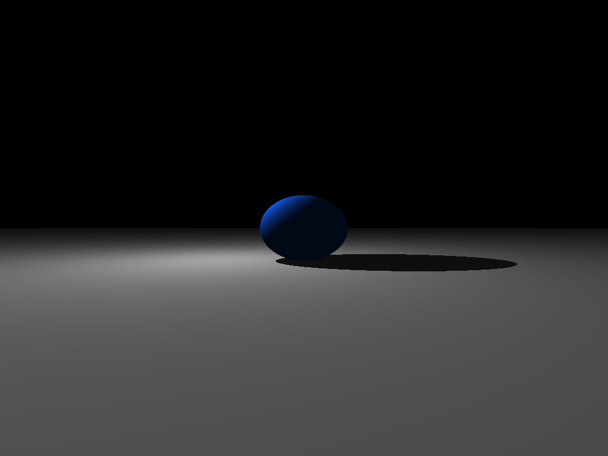
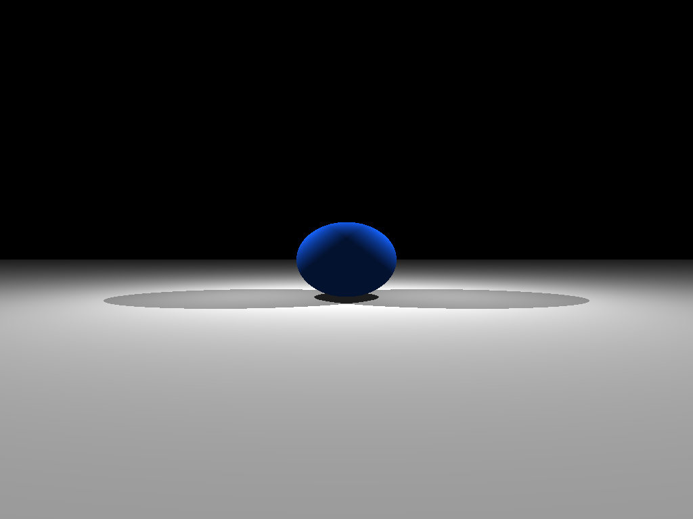
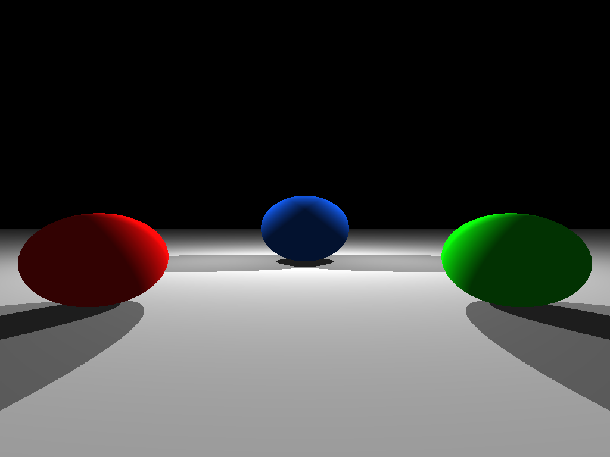
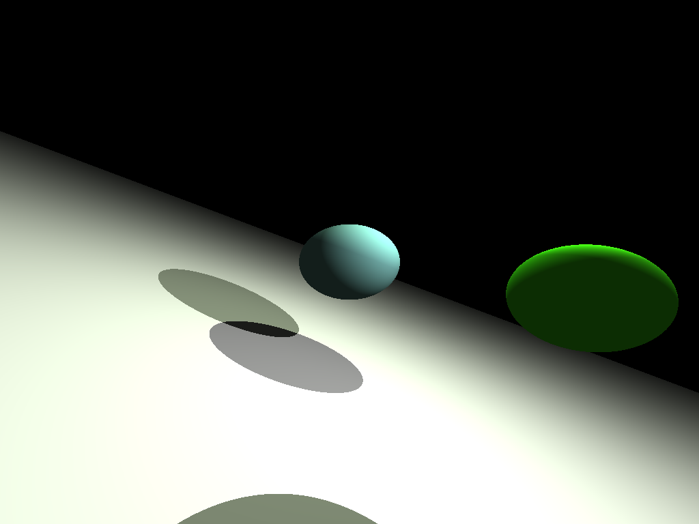

Ray tracer is a console based application. The source code is written via C++ upon an object oriented concept.
The program provides two main operations. You can either create the image of predefined scenes or you can create a scene and get the output image.
There are seven predefined scenes currently and you can create the image of them by selecting between 1-7. The output image file of the scene will be created under the bin folder as image.ppm.
If you want to create your own scene, you need to follow the steps on command line and provide the required information like light source number/color and object type/size/position. After you define the scene, corresponding output image is created under bin just like in predefined scenes.
If you are more interested in RayTracer application game, you can check the Github page of RayTracer project.



